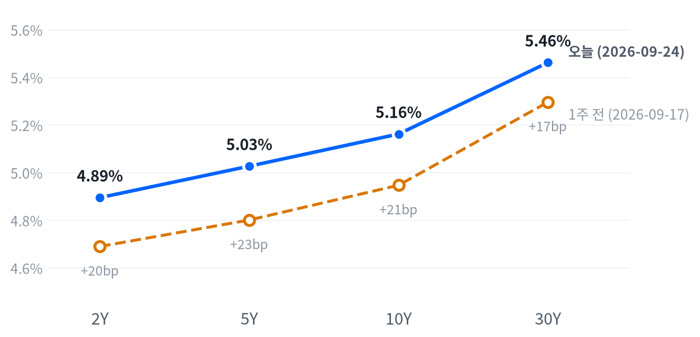

목요일 미국 10년물 국채금리가 5.162%까지 뛰며 2007년 6월 이후 가장 높은 자리에 올라섰고, 30년물도 5.462%로 2004년 6월 이후 최고권에 섰다. 그런데도 나스닥(+0.01%)과 대형주 지수(-0.02%)는 거의 그대로 마감했다.
배경은 예상보다 강한 PMI·주택 지표와 연준 인사의 매파 발언이고, CME FedWatch 기준 10월 FOMC 추가 인상 확률은 한 주 만에 크게 뛰었다. 하이일드 스프레드는 아직 거의 그대로여서, 금리 재평가가 신용시장까지 번졌는지가 다음 관찰 포인트다.
오늘 하루를 지배한 것은 채권시장이다. 10년물 금리가 5.162%까지 올라 2007년 6월 이후 최고권에 들어섰고, CME FedWatch 기준 10월 FOMC 추가 인상 확률은 한 주 만에 49%에서 75% 위로 뛰었다(CNBC 보도).
이 금리 재평가는 성장 공포가 아니라 예상보다 강한 지표가 만든 매파적 재가격화로 판단한다. 9월 플래시 종합 PMI가 58.4로 튀어 오르고 필라델피아 연은 지수도 서프라이즈를 내면서 좋은 지표가 오히려 역풍이 된 하루였고, 9월 23일 기준으로 갱신된 분해로는 10년물 상승분의 대부분이 기대인플레이션보다 실질금리(성장 기대·기간프리미엄) 쪽에서 왔다. 다만 신용시장은 아직 이 재평가에 반응하지 않아(하이일드 스프레드 전일 대비 +5bp에 그쳐 여전히 타이트) 금리 충격이 신용으로 번지는 경로는 열려 있을 뿐 확인되지는 않았다.
지금은 방향성 베팅보다 관찰 단계로 판단한다. 9월 16일 FOMC 인상 이후 메모리·AI 인프라가 금리 민감 섹터와 분리됐다는 가설은 오늘도 판단하지 못한 채로 남았다. 금융 섹터는 사흘째 진정됐지만 AI 인프라 바스켓은 이틀째 동반 하락했고, 그 하락은 코히런트·버티브 각각의 개별 요인으로 상당 부분 설명된다. 다음 관찰 시계는 실질금리 분해가 갱신되는 다음 세션과 10월 28일 FOMC다.
신용스프레드가 금리 재평가와 함께 벌어지기 시작하거나, AI 인프라 바스켓이 개별 이슈 없이도 금리 급등일마다 동반 하락하면 이 판단은 무게가 실린다. 반대로 다음 세션의 실질금리 분해가 기대인플레이션 주도로 바뀌거나 PMI 서프라이즈가 되돌려지면 오늘의 매파적 재가격화 해석은 다시 검토해야 한다.
| 지수 | 종가 | 등락률 | 기준일 |
|---|---|---|---|
| 닛케이225 | 65,018.95 | +1.38% | 9월 18일 |
| 항셍 | 24,834.12 | -0.83% | 9월 23일 |
| 상해종합 | 3,936.52 | -0.34% | 9월 23일 |
| DAX | 25,410.63 | -0.64% | 9월 23일 |
| FTSE100 | 10,705.30 | -0.31% | 9월 23일 |
| 유로스톡스50 | 6,299.82 | -0.29% | 9월 23일 |
| VIX | 15.67 | +3.23% | 9월 24일 |
아시아 증시는 지역 안에서도 갈렸다. 닛케이225(9월 18일 기준 +1.38%로 다소 오래된 값)는 올랐지만 항셍(9월 23일 -0.83%)·상해종합(9월 23일 -0.34%)은 내려, 평균은 보합권(+0.07%)에 머물렀다.
유럽은 지역 안에서는 고르게 하락했다. DAX(-0.64%)·FTSE100(-0.31%)·유로스톡스50(-0.29%)이 나란히 밀려 평균 -0.41%를 기록했고, 이 약세가 미국장 개장 전 선물에도 이어졌다.
야간 선물은 저녁 6시(ET) 무렵 고점을 찍은 뒤 미끄러졌다. 대형주 선물(ES)은 고점 7,779에서 다음날 오전 5시 반 저점 7,707까지 밀려 고저 폭이 0.93%였고, 나스닥 선물(NQ)도 같은 저점 시각까지 폭 1.46%로 더 크게 흔들렸다. 현물은 이 약세를 이어받아 하락 출발했다. 나스닥 -0.78%, 대형주 -0.51%, 러셀2000 -0.14% 갭이었다.
참여도는 평균적인 종목이 지수보다 못 따라간 하루였다. 동일가중 지수가 시가총액가중 지수보다 0.41%포인트 밀렸다(고르게 내림). 마감 위치는 지수별로 갈렸다. 대형주 지수(종가 위치 73)는 중단권에서 그쳤지만 나스닥(87)·러셀2000(90)은 고점권에서 마감했다. 최근 2,256거래일의 종가 위치 이력에서 고점권·저점권 경계를 다시 잰 기준으로도 나스닥·러셀은 뚜렷한 고점권 마감이다.
이날 시장을 움직인 것은 국채금리였다. 강한 지표 서프라이즈와 매파적 연준 발언이 겹쳐 금리가 큰 폭 뛰었고(자세한 수치는 아래 채권 참고), 이 충격이 개장 직후 지수를 끌어내렸다. 오후 들어서는 유가가 호르무즈 해협 재개 합의 기대로 급등분을 되돌리며 인플레이션 우려를 다소 진정시켜 지수가 저점에서 되돌아왔다. 시간외로는 메타의 소비자 AI 기기 공개가 커뮤니케이션서비스 강세로, 오라클의 데이터센터 불가항력 통지가 AI 인프라 관련주 약세로 이어졌다.
| 지수 | 종가 | 등락률 |
|---|---|---|
| S&P500 성장주 | 142.36 | +0.11% |
| 나스닥 | 26,939.37 | +0.01% |
| S&P500 | 7,704.13 | -0.02% |
| 러셀2000 | 2,835.57 | -0.11% |
| S&P500 가치주 | 231.22 | -0.30% |
| 다우존스 | 51,349.98 | -0.31% |
| 섹터 | 등락률 |
|---|---|
| 커뮤니케이션서비스 | +1.27% |
| 헬스케어 | +0.63% |
| 에너지 | +0.37% |
| 금융 | -0.02% |
| 경기소비재 | -0.30% |
| 기술 | -0.32% |
| 부동산 | -0.45% |
| 산업재 | -0.75% |
| 필수소비재 | -0.89% |
| 유틸리티 | -0.98% |
| 소재 | -1.19% |
S&P500(7,704)은 최근 2년(504거래일) 가운데 이보다 높았던 날이 17일뿐인 자리이고, 나스닥(26,939)은 이보다 높았던 날이 나흘뿐인 자리라 오늘 하루 거의 그대로 마감했어도 최상단 구간을 지키고 있다. 러셀2000(2,836)도 높은 쪽 19% 안에 들지만 VIX(15.67)는 낮은 쪽 22% 안에 머물러, 국채금리가 크게 흔들린 날인데도 주식시장의 공포 지표는 낮은 자리에 그대로 있다.
장중 흐름.나스닥은 개장가(26,725)가 오전 11시 저점(26,707, -0.07%)까지 살짝 밀렸다가 오후 1시 고점(26,971, +0.92%)까지 되올라 26,940 근방에서 마감했다. 대형주 지수도 같은 오전 11시 저점(7,663, -0.06%)에서 낮 12시 반 고점(7,719, +0.68%)까지 비슷한 궤적을 그렸다. 러셀2000은 낙폭이 더 컸다. 낮 12시 저점(2,811, -0.85%)까지 밀린 뒤 오후 2시 30분 고점(2,839, +0.14%)으로 겨우 되돌아와 마감했다.
오늘 지수 하락(-0.02%) 가운데 커뮤니케이션서비스가 +0.17%포인트로 가장 크게 지수를 밀어 올렸고 헬스케어(+0.06%포인트)·에너지(+0.01%포인트)가 뒤를 이었다. 반대로 기술이 -0.11%포인트로 가장 크게 끌어내렸고 산업재(-0.04%포인트)·경기소비재(-0.04%포인트)·유틸리티(-0.04%포인트)·필수소비재(-0.03%포인트)·금융(-0.002%포인트)이 보탰다. 이 아홉 섹터로 설명되지 않는 부분은 -0.00%포인트(반올림 전 -0.003%포인트)로 거의 없어, 오늘의 등락은 대부분 섹터 기여로 설명된다(소재·부동산은 회귀로 식별되지 않아 표에서 뺐다).
오늘의 장에서 본 참여도 격차와 마감 위치를 감안하면, 나스닥·러셀의 고점권 마감을 폭넓은 강세로 읽기는 어렵다고 판단한다. 평균적인 종목은 지수를 따라가지 못했고, 지수를 끌어올린 것도 커뮤니케이션서비스 한 업종(대부분 메타)이었을 뿐 기술은 오히려 지수를 깎아먹었다. 국채금리가 크게 뛴 날 지수가 거의 그대로 마감했다는 사실 자체는 견조하지만, 그 방어력이 소수 업종에 몰려 있다는 점은 다음에도 이어질지 지켜볼 대목이다.
| 만기 | 종가 | 전일比(bp) | 1주 전 | 주간 변화(bp) |
|---|---|---|---|---|
| 2Y | 4.895% | 0.0 | 4.690% | +20.5 |
| 5Y | 5.027% | +3.0 | 4.801% | +22.6 |
| 10Y | 5.162% | +4.8 | 4.947% | +21.5 |
| 30Y | 5.462% | +6.0 | 5.296% | +16.6 |

10년물(5.162%)과 30년물(5.462%) 모두 최근 2년(504거래일)을 통틀어 오늘이 가장 높은 자리다. 이보다 높았던 날이 하루도 없다. 9월 16일 FOMC 인상 이후 형성된 레인지의 상단을 이번 주 내내 계속 뚫고 올라서는 중이다.
30년물은 오늘 하루 +6.0bp로 평소 하루 움직임의 1.61배에 달해 큰 밴드에 들었다. 같은 날짜(9월 23일) 기준으로 보면 30년물 명목금리 변화(+11bp) 중 실질금리가 +10bp로 대부분을 차지했고, 10년물도 명목 +15bp 중 실질금리가 +13bp였다. 두 만기 모두 기대인플레이션보다는 성장 기대·기간프리미엄·수급 쪽에서 움직였다고 판단한다.
실질금리 주도라는 결과는 성장 기대·기간프리미엄·수급(발행·QT) 쪽을 의심하게 한다. 실제로 9월 플래시 종합 PMI가 58.4로 튀어 2021년 7월 이후 가장 큰 확장을 보였고 필라델피아 연은 지수도 서프라이즈를 냈다(자세한 내용은 매크로 참고). 다만 오늘(9월 24일)분 실질금리·기대인플레이션 분해는 하루 시차(FRED)로 아직 갱신되지 않아 직접 확인할 수 없다.
이번 주 커브는 구간별로 다르게 움직였다. 2년물과 10년물 사이는 소폭 스티프닝됐다(2s10s 26.7bp, 1주 전 25.7bp에서 +1.0bp) 반면 5년물과 30년물 사이는 오히려 플래트닝됐다(5s30s 43.5bp, 1주 전 49.5bp에서 -6.0bp). 전 구간이 다 밀린 베어마켓이지만 장기 구간의 상승 탄력이 상대적으로 약했다.
같은 날 진행된 7년물 국채 입찰(440억달러)은 응찰배율 2.42배로 최근 며칠(9월 23일 2년물 2.63배·5년물 2.21배)과 비슷한 수준이었고 간접낙찰 비중도 49.1%로 무난했다. 오늘 급등을 수급 부진으로 단정할 근거는 약하다.
10년 기간프리미엄은 9월 18일 기준 0.96%포인트로 하루 +2bp 올랐다. 관측 구간은 다르지만 같은 방향으로 움직인 점은 불확실성 프리미엄 확대를 검토할 단서다. 신용시장은 아직 조용하다. 하이일드 스프레드는 9월 23일 기준 2.73%포인트(전일 +5bp)로 여전히 타이트했고 투자등급 스프레드도 0.77%포인트(전일 변화 없음)로 그대로다. 금리 재평가가 아직 신용으로 번지지 않았다는 뜻이지만, 신용스프레드는 통상 후행 지표라는 한계는 있다.
5년 뒤 5년 금리는 9월 23일 기준 명목 5.23%, 실질 2.87%다(하루 변화 +14bp). 위험 프리미엄이 섞인 값이라 시장의 기대라고 단정할 수는 없지만, 이 먼 구간의 금리도 함께 뛰었다는 것은 오늘의 금리 재평가가 단기 이벤트만이 아니라 더 긴 구간까지 번졌다는 뜻으로 읽을 수 있다.
| 통화쌍 | 종가 | 등락률 |
|---|---|---|
| DXY | 101.25 | +0.15% |
| USD/KRW | 1,362.50 | +0.90% |
| USD/JPY | 158.27 | +0.51% |
| EUR/USD | 1.1382 | -0.58% |
달러지수(DXY)는 101.25로 최근 2년의 한가운데쯤(중간)에 머물러 있다. 반대로 원화는 1,363원으로 같은 기간 가운데 이보다 낮았던 날이 28일뿐인 자리다. 오늘 원화가 12원 밀렸어도 여전히 강한 쪽에 서 있다. 엔/달러(158.27엔)는 높은 쪽 24% 안에 든다.
달러가 대체로 강세를 보인 것은 오늘 급등한 미국 금리로 판단한다. 10년물이 하루 만에 4.8bp 뛰면서 주요국과의 금리 격차가 벌어졌고, 이는 유로·엔 대비 달러 강세로 이어졌다(EUR/USD -0.58%, USD/JPY +0.51%). 다만 이 경로가 늘 이렇게 작동하는 것은 아니다. 주식과 달러의 최근 상관관계는 반대로 움직이는 느슨한 흐름(직전 구간보다 약해짐)인데 오늘은 주식이 거의 그대로인데도 달러만 오른 날이었다.
엔/달러는 새벽 3시 반(ET) 저점(157.79엔)에서 오후 4시 30분(ET) 고점(159.04엔)까지 장중 내내 오르는 궤적을 그렸다. 오늘 하루 변화(+0.51%)보다 장중 오름폭이 더 컸던 것은, 24시간 거래되는 외환시장의 기록 시각이 정규장 종가와 다르기 때문이다.
| 품목 | 종가 | 등락률 |
|---|---|---|
| WTI | $94.09 | +2.09% |
| Brent | $106.27 | +3.09% |
| 천연가스 | $3.27 | +8.24% |
| 금 | $4,307.60 | -0.25% |
WTI(94.09달러)는 같은 길이의 구간 가운데 높은 쪽 11% 안에 드는 자리이고, 금(4,308달러)은 그 한가운데쯤이다. 오늘 WTI·브렌트가 각각 2.09%·3.09% 뛰며 최근 흐름의 상단으로 다가섰지만 금은 오히려 0.25% 밀렸다.
오늘 유가 급등은 수급 쪽 사건으로 판단한다. 장중 호르무즈 해협 관련 리스크가 고조됐다가 재개 합의 기대로 되돌려지는 과정에서 WTI가 새벽 저점(91.27달러)에서 낮 12시 고점(96.78달러, 개장 대비 +6.01%)까지 급등한 뒤 정산 무렵 되밀려 94.09달러로 마감했다. 브렌트도 같은 흐름을 따라 3.09% 올랐다. WTI-브렌트 스프레드는 12.18달러로, 브렌트가 여전히 WTI보다 높게 거래되는 통상적인 구도가 유지됐다.
천연가스는 8.24%나 뛰었지만 오늘 자료로 확인되는 개별 원인은 없다. 금은 국채 실질금리가 하루 13bp(10년물 기준, 9월 23일)나 뛴 날인데도 0.25%만 밀려, 금과 금리의 최근 상관관계(반대로 움직이는 느슨한 흐름)에 비해서는 저항력이 있었던 하루로 판단한다. 금은 새벽 1시(ET) 고점(4,331달러)에서 오전 6시 반(ET) 저점(4,278달러, -0.97%)까지 밀린 뒤 소폭 되올라 마감했다.
미국 경기 국면은 성장·물가 모두 둔화 방향인 연착륙을 9월 1일부터 열여드레째 유지한다. 오늘 새로 나온 신규 실업수당 청구·신규주택 판매는 개선 방향이라 성장 쪽 점수를 -0.391에서 -0.303으로 끌어올렸지만, 물가 쪽 점수는 -0.526으로 그대로다. 두 점수 모두 아직 음(-)의 방향, 즉 성장·물가 둘 다 둔화 쪽에 남아 있어 좌표를 옮길 만큼은 아니었다. 오늘의 개선은 경계 안쪽에서의 움직임이라 국면 이름은 그대로 간다. 국면을 다시 열 수 있는 다음 계기는 9월 29일 JOLTS, 9월 30일 PCE 물가, 10월 2일 고용상황처럼 다음 주에 몰려 있는 신규 지표 발표다.
고용축은 개선이라고 판단한다(일곱 지표 중 다섯이 개선). 계속 실업수당 청구가 뚜렷하게 개선됐고(4주 평균 178.7만건에서 174.4만건으로), 실업률도 3개월 평균 기준 완만히 개선됐다(4.30%에서 4.13%로). 다만 비농업 고용은 8월 한 달은 +16.2만건으로 크게 뛰었지만 3개월 평균은 오히려 +14.2만건에서 +7.1만건으로 완만히 둔화돼(악화) 상충이 남는다. 고용축 +0.377
| 지표 | Actual | Forecast | Previous | 발표일 | 컨센 대비 | 직전 대비 | 추세 |
|---|---|---|---|---|---|---|---|
| 구인건수(JOLTS, 7월) | 7,271K | — | 7,182K | 2026-07 기준월 | 개선 | 개선(미미) · 3개월 평균 7,131K → 7,330K | |
| 신규 실업수당 청구(9월 19일 마감 주간) | 197,000 | 204,000 | 198,000 | 2026-09-24 08:30 ET(DOL) | ▲ 상회 | 개선 | 개선(미미) · 4주 평균 206K → 202K |
| 신규 청구 4주 평균 | 202,250 | — | 204,000 | 2026-09-24(DOL) | 개선 | 악화(미미) · 4주 평균 202K → 205K | |
| 계속 실업수당 청구(9월 12일 마감 주간) | 1,719,000 | — | 1,717,000 | 2026-09-24(DOL) | 악화 | 개선(뚜렷) · 4주 평균 1,787K → 1,744K | |
| 비농업 고용 변화(8월) | +162K | — | +21K | 2026-08 기준월 | 개선 | 악화(완만) · 3개월 평균 +142K → +71K | |
| 실업률(8월) | 4.1% | — | 4.1% | 2026-08 기준월 | 보합 | 개선(완만) · 3개월 평균 4.30% → 4.13% | |
| 평균시간당임금 MoM(8월) | +0.27% | — | +0.16% | 2026-08 기준월 | 개선 | 개선(완만) · 3개월 평균 +0.20% → +0.23% |
신규 실업수당 청구는 9월 19일 마감 주간 기준 197,000건으로 전주(198,000건)보다 소폭 줄었고 컨센서스(204,000건)도 밑돌았다. 4주 평균도 202,250건으로 낮아졌다.
DOL은 직전 주(9월 12일 마감) 신규 청구를 처음 발표된 196,000건에서 198,000건으로 2,000건 상향 수정했고, 4주 평균도 203,250건에서 204,000건으로 750건 올렸다고 밝혔다. 즉 오늘의 개선은 상향된 기준선 대비 개선이며, 최초 발표치(196,000건) 대비로는 오히려 소폭 늘었다. 계속 실업수당(9월 12일 마감)은 반대로 하향 수정됐다. 전전주 1,730,000건이 1,717,000건으로 13,000건 낮아졌고, 이 새 기준선 대비 이번 주(1,719,000건)는 2,000건 늘었다. 주별로는 켄터키주가 신규 청구 1,041건 증가로 최대였고 주 정부는 이를 제조업 부문 해고로 직접 설명했다.
헤드라인은 고용시장이 여전히 견고하다는 서사를 지지하지만, 신규 청구는 상향·계속 청구는 하향이라는 서로 다른 방향의 수정이 겹쳐 단일 신호로 보기는 조심스럽다. 채권시장은 오늘 이 발표보다 PMI 서프라이즈와 연준 인사 발언에 더 크게 반응한 것으로 보이며, 이 보합적인 결과는 위 성장·물가 판정을 어느 쪽으로도 강하게 밀지 않았다.
출처: 미 노동부 고용훈련국(DOL) 주간 실업수당 청구 보도자료. 원문 표기는 신규 청구 197000건, 계속수당(9월 12일 마감) 1719000건이다.
생산·활동축은 악화다(다섯 지표 중 넷이 악화). 내구재 주문이 뚜렷하게 악화됐다(3개월 평균 +2.90%에서 -0.78%로). 7월 헤드라인은 전월비 +1.08%로 늘었지만 3개월 평균은 마이너스로 돌아섰다. 기존주택 판매도 미미하게 악화됐다(3개월 평균 408.0만에서 405.7만 건으로). 다만 신규주택 판매는 미미하게 개선됐다(68.4만 채, 3개월 평균 64.5만에서 66.6만 채로). 신규·기존주택 판매가 반대 방향으로 갈린 상충이다. 생산·활동축 -0.406
| 지표 | Actual | Forecast | Previous | 발표일 | 컨센 대비 | 직전 대비 | 추세 |
|---|---|---|---|---|---|---|---|
| 산업생산 MoM(8월) | +0.02% | — | +0.20% | 2026-08 기준월 | 악화 | 보합 · 3개월 평균 +0.24% → +0.14% | |
| 내구재주문 MoM(7월) | +1.08% | — | +0.58% | 2026-07 기준월 | 개선 | 악화(뚜렷) · 3개월 평균 +2.90% → -0.78% | |
| 신규주택판매(8월) | 684K | 620K | 643K | 2026-09-24(Census/HUD) | ▲ 상회 | 개선 | 개선(미미) · 3개월 평균 645K → 666K |
| 기존주택판매(8월) | 398.0만 | — | 406.0만 | 2026-08 기준월 | 악화 | 악화(미미) · 3개월 평균 4,080K → 4,057K | |
| 실질GDP QoQ 연율(26년 2분기) | 1.5% | — | 2.1% | 2026년 2분기 기준 | 악화 | — | |
| 필라델피아 연은 제조업지수(9월) | 37.8 | 30.5~32.1(소스 간 편차) | 47.4 | 2026-09-17 | ▲ 상회 | — | — |
| S&P Global 플래시 제조업PMI(9월) | 57.0 | 53.6 | 53.9 | 2026-09-23 | ▲ 상회 | — | — |
| 〃 서비스업PMI(9월) | 58.7 | 56.0 | 56.5 | 2026-09-23 | ▲ 상회 | — | — |
| 〃 종합PMI(9월) | 58.4 | — | 56.0 | 2026-09-23 | — | — |
8월 신규주택 판매는 연율 68.4만 채로 7월(64.3만 채) 대비 +6.4%, 컨센서스(62만 채)를 크게 웃돌았다.
Census국은 이 헤드라인 증가가 90% 신뢰구간(±19.5%포인트)에 0을 포함해 통계적으로는 유의하지 않다고 스스로 밝혔다. 지역별로는 중서부가 전월비 +84.9%(9.8만 채)로 가장 크게 늘었지만 신뢰구간이 ±51.2%포인트로 매우 넓었고, 표본이 가장 큰 남부는 +6.9%(45.1만 채, 전체의 66%)로 비교적 안정적이었다. 중위가격은 39만3,700달러(+0.4%)로 거의 변화가 없었다. 반면 평균가는 47만8,700달러(-9.1%)로 급락했는데, 30만달러 미만 저가 구간 비중이 7월 19%에서 8월 22%로 늘어난 믹스 효과가 평균가를 끌어내렸다.
헤드라인만 보면 강한 서프라이즈지만 원문이 밝힌 넓은 신뢰구간과 지역별 변동성을 고려하면 주택 수요가 뚜렷이 개선됐다고 단정하기는 이르다. 그럼에도 이 지표는 오늘 채권시장이 소화한 견조한 경제지표 목록에 이름을 올렸을 가능성이 있고, 생산·활동축 판정에서 신규주택 판매를 미미한 개선 쪽으로 반영했다.
출처: 센서스국·HUD 신규주택 판매 보도자료. 원문 표기는 연율 684K(8월)다.
소비축은 악화다(둘 다 악화). 소매판매는 8월 전월비 +1.24%로 크게 반등했지만 3개월 평균은 오히려 +1.11%에서 +0.34%로 낮아져 뚜렷하게 악화됐다. 한 달의 반등이 앞선 부진을 메우지 못했다는 뜻이다. 미시간대 소비자심리도 3개월 평균 기준 완만히 악화됐다(53.2에서 49.8로). 소비축 -0.879
| 지표 | Actual | Forecast | Previous | 발표일 | 컨센 대비 | 직전 대비 | 추세 |
|---|---|---|---|---|---|---|---|
| 소매판매 MoM(8월) | +1.24% | — | -0.54% | 2026-08 기준월 | 개선 | 악화(뚜렷) · 3개월 평균 +1.11% → +0.34% | |
| 미시간대 소비자심리(7월 최종치) | 55.2 | — | 49.5 | 2026-07 기준월(최종치) | 개선 | 악화(완만) · 3개월 평균 53.2 → 49.8 |
물가축은 둔화다(여덟 지표 중 다섯이 둔화). 소비자물가 전월비가 뚜렷하게 둔화됐고(3개월 평균 +0.66%에서 +0.02%로) 생산자물가도 뚜렷하게 둔화됐다(3개월 평균 +0.79%에서 +0.12%로). 다만 미시간대 1년 기대인플레이션은 완만히 재가속돼(3개월 평균 3.97%에서 4.53%로) 방향이 엇갈렸다. 실제 가격지표는 둔화되는데 소비자의 기대인플레이션만 거꾸로 올라간 상충이다. 물가축 -0.526
| 지표 | Actual | Forecast | Previous | 발표일 | 컨센 대비 | 직전 대비 | 추세 |
|---|---|---|---|---|---|---|---|
| CPI YoY(8월) | 3.71% | — | 3.54% | 2026-08 기준월 | 상승 | 교착 · 3개월 평균 3.85% → 3.66% | |
| CPI MoM(8월) | +0.40% | — | +0.07% | 2026-08 기준월 | 상승 | 둔화(뚜렷) · 3개월 평균 +0.66% → +0.02% | |
| Core CPI YoY(8월) | 2.76% | — | 2.79% | 2026-08 기준월 | 하락 | 교착 · 3개월 평균 2.87% → 2.79% | |
| Core CPI MoM(8월) | +0.29% | — | +0.22% | 2026-08 기준월 | 상승 | 둔화(완만) · 3개월 평균 +0.26% → +0.16% | |
| PPI 최종수요 MoM(8월) | +0.40% | — | +0.07% | 2026-08 기준월 | 상승 | 둔화(뚜렷) · 3개월 평균 +0.79% → +0.12% | |
| PCE 물가 YoY(7월) | 3.70% | — | 3.72% | 2026-07 기준월 | 하락 | 재가속(완만) · 3개월 평균 3.41% → 3.84% | |
| Core PCE YoY(7월) | 3.34% | — | 3.34% | 2026-07 기준월 | 보합 | 재가속(미미) · 3개월 평균 3.21% → 3.38% | |
| 미시간대 1년 기대인플레(7월 최종치) | 4.2% | — | 4.6% | 2026-07 기준월(최종치) | 하락 | 재가속(완만) · 3개월 평균 3.97% → 4.53% |
직전 대비는 Actual을 Previous와 비교한 것이고, 추세는 최근 3개월 평균을 그 앞 3개월 평균과 비교한 것입니다(주간 실업수당 청구는 4주 평균끼리). 추세의 세기는 그 지표가 평소 움직이는 폭에 견준 크기이고, 작은 변화는 보합으로 봅니다. 분기 지표인 GDP는 두 비교가 같은 숫자를 보므로 직전 대비만 싣습니다.
연준의 다음 수는 10월 28일 FOMC에서의 추가 25bp 인상 쪽으로 무게가 실린다고 판단한다. CME FedWatch 기준 이 확률은 1주일 전 49%에서 9월 24일 기준 75% 이상으로 뛰었다(CNBC 보도). 마이클 바 연준 이사의 강경 발언과 예상보다 뜨거운 인플레이션·PMI 지표가 이 확률 상승의 계기로 지목됐다. 9월 16일 FOMC는 이미 25bp 인상을 단행했고, 이번엔 사전 확률이 아니라 실제 결과로 확인된 인상이었다.
이 판단은 다음 FOMC 성명·회견에서 이미 확인된 인상 신호를 되돌리는 언급이 나오거나 물가·고용 지표가 예상보다 뚜렷하게 냉각되면 재검토한다.
채권·귀금속 모두 우호라고 판단한다. 물가가 공식적으로 둔화 국면에 들어서면 실질금리가 정점을 지나 정책 완화 재개 기대가 장기물과 금 보유비용을 함께 낮추는 경로다. 다만 실질금리 자체가 기간프리미엄·수급 요인으로 계속 오르는 국면에서는 이 경로가 가격에 반영되기까지 시차가 있다. 확인 지표는 core PCE 전년비가 3.0%를 밑돌 만큼 추가로 둔화되는지, 10년 실질금리(TIPS)가 다시 하락하는지다.
주식·에너지 모두 중립이라고 판단한다. 성장 쪽 점수가 둔화에 머물지만 물가 둔화 흐름도 함께 진행돼 두 힘이 상쇄되고, 지정학 리스크 프리미엄은 3~6개월 구조축이 아니라 이벤트성 변수라 OPEC+ 증산 여력과 이란 리스크가 서로 상쇄된다. 확인 지표는 ISM 제조업 PMI가 50을 웃도는 재가속을 이어가는지, 10년물이 4.5%를 밑도는지, 호르무즈 해협 통항과 운송 정상화가 이어지는지다.
FX는 비우호라고 판단한다. 성장 정체 속 물가 둔화가 이어지면 실질금리 스프레드 축소 기대가 달러 약세 경로를 지지하지만, 안전자산 수요와 상대적으로 높은 미국 금리 수준이 이 경로에 맞서는 힘으로 계속 작용한다. 확인 지표는 달러지수가 20일 기준 3% 이상 추가로 빠지는지, CME FedWatch의 인하 확률이 확대되는지다.
메모리는 우호, AI 인프라는 중립으로 갈린다. 메모리는 소비축 부진과 무관하게 기업 AI 데이터센터 투자 사이클이 D램·낸드 수급을 견인하는 독립적인 성장 경로를 타지만, AI 인프라는 캐펙스 사이클 자체는 구조적으로 우호적이어도 장기금리 레벨이 높은 구간에서 할인율 상승이 고성장주 밸류에이션을 압박하는 경로가 이를 상쇄한다. 매크로 국면과 AI 캐펙스 사이클이 서로 다른 시계에서 움직인다는 뜻이다. 확인 지표는 마이크론 등 주요업체의 회계연도 가이던스 상향이 이어지는지, 30년물이 5.4%를 웃돌아 추가로 오르는지, 하이퍼스케일러의 3분기 캐펙스 가이던스다.
채권시장은 오늘 신규 실업수당 청구·신규주택 판매라는 두 발표보다 필라델피아 연은·S&P Global PMI 서프라이즈와 연준 인사 발언에 더 크게 반응한 것으로 보인다. 신규 실업수당 청구(19.7만건)는 컨센서스(20.4만건)를 밑돌아 완만한 개선이었고 신규주택 판매(68.4만채)도 컨센서스(62만채)를 크게 웃돌았지만, 이 두 발표 자체가 금리를 크게 움직인 기색은 없었다. 오늘의 급등은 같은 날 나온 PMI 서프라이즈·매파적 연준 발언과 겹쳤다.
트럼프-시진핑, 백악관 회담 뒤 국빈 만찬CNBC · 9월 24일
도널드 트럼프 미국 대통령과 시진핑 중국 국가주석이 9월 24일 백악관에서 무역, 인공지능, 이란 전쟁을 중심으로 고위급 회담을 가졌다. 재무부 장관 스콧 베센트는 양국이 11월 중순 만료 예정인 임시 무역 휴전협정을 1월 10일까지 2개월 연장하기로 합의했다고 발표했다. 이 협정은 미국의 관세를 인하하고 중국의 희토류·전략광물 수출 통제를 중단하는 내용을 담고 있다. 트럼프는 연설에서 "향후 수십 년 동안 평화와 번영을 촉진할 수 있다"고 강조했고, 시 주석은 "건강한 경쟁이 필요하지만 그것이 일방적 승패가 아닌 상호 추격이어야 한다"고 응답했다. 트럼프는 AI 규제에 반대 입장을 보였으나 시 주석은 인공지능이 인간의 통제 아래 유지되어야 한다고 언급했다. 저녁에는 백악관에서 국빈 만찬이 개최될 예정이다.
상원, 이란전 종료 촉구 결의안 부결CNBC · 9월 24일
미국 상원이 24일 이란과의 전쟁 종료를 촉구하는 결의안을 근소한 표차로 부결시켰다(찬성 49표). 공화당 의원 4명을 제외한 모두가 반대했으며, 민주당 의원 1명도 반대표를 던졌다. 전쟁으로 인한 휘발유 가격 상승이 11월 중간선거에 미칠 영향을 우려한 일부 공화당 의원들이 트럼프 대통령과 입장을 달리하며 전쟁 종료를 촉구했음에도 불구하고 결의안은 통과하지 못했다. 이 결의안은 상원에 상정된 동안 통과되지 않아 법적 구속력이 없는 상징적 의미만 가진다. 다만 민주당 지도부는 헌법상 전쟁 선포권이 의회에 있으므로 대통령이 이미 통과된 이전 전쟁권한결의안을 준수해야 한다고 주장한다. 백악관은 전쟁권한법이 위헌이라는 입장을 유지하고 있다. 휘발유 평균 가격은 갤런당 4.48달러로 상승했으며, 디젤 가격 급등은 농민과 트럭 운전자들에게 부담이 되고 있다.
헤그세스 국방장관, 재산 최소 310만 달러 신고CNBC · 9월 24일
피트 헤그세스 국방장관이 2025년 연간 재정공시에서 현금과 투자자산, 비트코인을 합쳐 최소 310만 달러를 보유하고 있는 것으로 드러났다. 정부윤리실 제출 문서에 따르면 단일 은행 계좌에만 100만 달러 이상이 예치되어 있으며, 퇴직연금 계좌 5개에는 약 205만~435만 달러의 투자자산이 있다. 헤그세스의 계좌는 약 50만~125만 달러, 부인 제니퍼 헤그세스의 개인퇴직계좌는 약 155만~310만 달러를 포함한다. 가정 전체로는 비트코인 1만6천~6만5천 달러 규모의 자산도 보유하고 있다. 2024년 공시 대비 눈에 띄는 변화는 현금 계좌로, 'U.S. 은행 #2' 계좌가 1만5천~5만 달러에서 앞서 언급한 계좌와 같은 규모로 급증했다. 헤그세스는 2025년 이해충돌 회피를 위해 개별주식 수십 개를 매도한 후 상장지수펀드(ETF) 16개를 약 141만~305만 달러에 매입했으며, 여기에는 2월 록히드마틴과 노스롭그루먼 방위산업주 각각 1천~1만5천 달러어치 매각이 포함된다.
프랑스 와인 생산량, 70년 만의 최저 근접CNBC · 9월 20일
프랑스 와인 생산이 70년 만의 최저 수준에 근접하고 있다. 농업부는 2026년 와인 생산량이 70년 만의 저점을 기록할 수 있다고 경고했으며, 이는 3년 연속 감소다. 기록적인 폭염과 심각한 가뭄이 프랑스의 세계적 와인 산업에 타격을 주고 있다. 부르고뉴 최대 그랑크루 포도원 소유업체인 메종 루이 라투르의 플로랑 라투르 최고경영자는 올여름 강우를 기원했지만 수확량이 절반 수준에 그쳤다고 밝혔다. 역설적으로 로와르 계곡과 샹파뉴 같은 온화한 기후 지역이 피해를 크게 입었다. 보르도 대학교 와인·주류 경제학 교수는 2019년부터 2025년 사이 와인 부문 사업 실패가 3배 증가했다고 지적했다. 기후 적응을 위한 관개 시설 같은 투자 필요성이 업계 통합을 가속화할 수 있다. 프랑스 정부는 9월 초 폭염 피해 농민과 포도 재배자 지원을 위해 10억 유로 이상의 긴급 지원 계획을 발표했다. 2026년에는 정부 지원 프로그램의 일환으로 프랑스 전체 포도원 약 4%가 제거될 예정이며, 농민은 헥타르당 4,000유로를 받는다.
골드만삭스 「소비자심리 부진, 행복도 하락 탓」CNBC · 9월 19일
골드만삭스의 이코노미스트 조지프 브릭스는 견고한 경제 성과에도 소비자심리가 부진한 이유를 행복도 하락으로 진단했다. 미시간대학 소비자심리지수는 올해 기록적 저점을 기록했으며, 9월에 전년 동기 대비 13% 하락했다. 브릭스는 경제 심리의 약세가 경제 자체보다는 "더 근본적인 세계에 대한 비관적 평가"에서 비롯됐다고 지적했다. 인플레이션 압박도 영향을 미치지만, "낮아진 행복감"이 국내총생산이나 주식시장 등 경제지표와 소비자심리 간의 괴리를 부분적으로 설명한다는 것이다. 시카고대학의 일반사회조사 데이터에 따르면 팬데믹 이후 행복도는 완전히 회복되지 않았으며, 자신을 "매우 행복하다"고 느끼는 응답자 비중은 2016년 31%에서 2024년 23%로 하락했다. 행복도 감소는 금융만족도 감소보다 더 급격했다. 브릭스는 제도 신뢰도 하락이 최근 행복도 감소의 "불균형적 부분"을 초래했다고 분석했다.
인도네시아, 세 번째 재무장관 임명CNBC · 9월 16일
인도네시아의 프라보워 대통령은 9월 16일 재무장관 푸르바야 유디 사데와를 해임하고 부장관 수아하실 나자라로 교체했다. 이는 임기 중 세 번째 재무장관 교체로, 은행인도네시아 총재 페리 와르지오의 급작스러운 사임에 이어 발생했다. 나자라는 재무부 경험이 풍부한 테크노크래트로 평가받으며 투자자들의 신뢰 회복을 기대하게 한다. 전임자 시기 인도네시아는 신용등급 전망이 하향 조정되고 통화가 사상 최저치를 기록했지만, 최근 재정 규율 전환으로 시장심리가 안정되었다. 루피아는 수요일 달러당 1만7680으로 상승했다. 다만 전문가들은 나자라가 프라보워의 비용 많은 성장 의제를 제한된 재정 공간 내에서 재원 조달해야 하는 과제를 지적한다. 중앙은행 독립성 우려도 제기되는 상황에서 2027년 예산과 통화정책 결정이 정책 전환의 진정성을 판단하는 핵심 기준이 될 것으로 보인다.
국채금리 급등, 연준 케빈 워시에게 새 난제CNBC · 9월 24일
채권시장의 급등하는 수익률이 연방준비제도에 새로운 정책적 딜레마를 안겨주고 있다. 지난 24일 미국 국채 수익률이 계속 상승한 것은 인플레이션이 연준의 2% 목표치를 상당히 초과하고 있으며, 에너지 가격이 추가 상승했고, 인공지능 투자 붐과 함께 채무 발행이 증가하고 있다는 점을 반영한 것이다. 시장은 올해 10월과 지난주 인상 1개월 후 추가 인상 가능성을 점쳐왔으며, 올해 말 또는 2027년 초 추가 인상 가능성까지 예상하고 있다. 이는 6월 연준이 올해 1회 인상만 하고 향후 수년간 인하에 들어갈 것으로 예상했던 입장과 크게 대조된다. 다만 케빈 워시 연준의장이 시장 신호에 의존한 정책 운영을 강조하면서, 금리를 더 올려야 한다는 시장 신호와 경기 침체 우려 사이에서 방향을 정해야 하는 어려움에 직면했다. 연준은 너무 많이 인상하면 경기 확장을 자를 위험이 있고, 너무 적게 하면 인플레이션 통제 능력에 대한 신뢰도가 떨어질 수 있다.
「금리가 급하게 오르면 항상 뭔가 무너졌다」CNBC · 9월 24일
10년물 미국 국채 수익률이 지난 2주 동안 4.8% 이하에서 5.17% 이상으로 급등하면서 월스트리트 전문가들이 경고를 발하고 있다. 22V 리서치의 존 로크 기술분석 책임자는 지난 50년 국채 수익률이 급상승한 16차례 사례를 분석한 결과, 매번 금융 위기가 뒤따랐다고 지적했다. 2023년 실리콘밸리은행 사태부터 1987년 주가 폭락까지 국채 수익률 급등은 위험자산에 타격을 주는 시장 혼란을 야기했다. 국채 수익률이 벤치마크인 만큼 급상승 시 기업과 투자자들의 차입 계획이 붕괴될 수 있다. 이번에는 불투명한 민간신용시장과 부채로 과다 재정된 AI 데이터센터가 위험 지점으로 지목된다. 특히 지역은행 주가가 최근 고점에서 10% 하락해 수정국면 임계점에 가까워졌다. 과거 금리 인상 주기에 은행권이 가장 큰 타격을 받은 점을 고려하면 지역은행의 견조함이 시장 안정의 핵심이다.
30년물 금리, 2004년 이후 최고CNBC · 9월 24일
9월 24일 미국 채권 시장이 연방준비제도의 추가 인상 가능성에 따라 장기물 수익률이 22년 만에 최고치를 기록했다. 30년물 국채 수익률은 5.501%까지 올라 2004년 6월 이후 최고 수준에 도달했고, 10년물은 5.223%로 2007년 6월 이후 처음으로 5% 후반대에 진입했다. 이는 전일 미국의 강한 경제지표와 연준 관계자의 강경 발언, 높은 유가에 따른 장시간 매도 이후 추가 하락이다. 글로벌 채권도 동반 하락했으며 일본 10년물 국채 수익률은 1996년 8월 이후 최고, 영국과 독일 채권도 수년 만에 최고 수익률을 기록했다. CME그룹 페드워치 도구에 따르면 연방공개시장위원회가 10월 회의에서 추가 인상할 확률이 75% 이상으로 1주일 전 49%에서 급상승했다. 연준 이사회 멤버인 마이클 바르는 인플레이션 목표 달성을 위해 추가 정책 조정이 필요하다고 언급했고, 뉴욕 연준 총재 존 윌리엄스는 연말까지 추가 인상이 합리적이라고 밝혔다.
테슬라, 네바다 세미 트럭 공장 가동CNBC · 9월 24일
테슬라가 네바다주 스파크스에 세미 대형 전기트럭의 대량 생산 공장을 개장했다. 일론 머스크 최고경영자가 상용 대형트럭 시장 진출을 추진하는 가운데 이뤄진 조치다. 테슬라의 핵심 사업인 전기자동차가 전 세계적으로 경쟁 심화에 직면한 상황에서, 디젤유가 상승으로 상용 트럭의 전기화 전환 기회가 열리고 있다. 업계 연합 ZET SCALE은 테슬라를 주요 완성차 제조업체로 선정해 초기 2,500대 주문을 하기로 했으며, 향후 1만대 이상의 전기트럭을 다양한 공급업체에서 구매할 계획이다. 트럭 운송사 아인라이드도 500대의 테슬라 세미를 주문했다. 테슬라는 세미의 배터리 주행거리를 주요 판매점으로 내세우고 있으며, 장거리 모델은 완전 충전 시 약 500마일, 표준형은 325마일을 주행할 수 있다고 밝혔다. 머스크는 자율주행 시스템이 올해 연말이나 내년 초 세미에 적용될 것으로 예상했다.
벤틀리, 23만달러 첫 전기차로 페라리에 도전CNBC · 9월 24일
영국 럭셔리 자동차 제조사 벤틀리가 9월 24일 첫 완전 전기차 '토르칼'을 공개했다. 가격은 £173,000(약 $229,000)으로 페라리의 첫 전기차 '루체'($626,000)보다 훨씬 저렴하다. 토르칼은 벤틀리 107년 역사에서 처음 선보이는 전기 모델이며, 영국 크루의 제조시설에서 설계·제조됐다. 최대 주행거리는 600km이고 시속 60마일까지 3초 미만에 도달한다. 토르칼은 벤틀리의 네 번째 모델로 콘티넨탈 GT, 플라잉 스퍼, 벤테이가와 함께 라인업을 구성한다. 벤틀리 CEO 프랑크-슈테펜 발리저는 토르칼이 벤틀리의 진입 수준 가격대에 위치하며 모든 시장에서 긍정적 반응을 받고 있다고 밝혔다. 페라리가 3개월 전 루체를 출시했을 때 디자인 비판이 제기된 것과 달리, 벤틀리는 설계, 주행감, 사운드스케이프 등에 집중해 '진정한 벤틀리'를 만드는 데 중점을 뒀다. 포르쉐와 람보르기니 등 다른 스포츠카 제조업체들은 약한 수요로 전기차 출시 계획을 축소한 상태다.
MGM리조트, 인수 제안 철회에 11% 급락CNBC · 9월 24일
배리 딜러가 이끄는 피플 인크가 MGM 리조츠 인수 제안을 철회하면서 MGM 주가는 9월 24일 약 11% 하락했다. 피플 인크는 약 4개월 전 주당 48.30달러에 MGM을 사들이겠다고 제시했으며, 현재 MGM 지분 26.1%를 보유 중이다. 딜러는 인수 완료 과정에서 여러 요소가 기대와 다르게 진행됐다며 현재 시점에서는 MGM을 비공개사로 전환할 계획을 추진하지 않겠다고 밝혔다. CNBC 보도에 따르면 딜러가 거래에서 손을 뺀 주된 이유는 회사가 떠안게 될 상당한 규모의 차입금 때문이었다. 한편 같은 주 초 시저스 엔터테인먼트 주주들은 빌리어네어 틸먼 페르티타가 제시한 인수 제안을 승인했으며, 페르티타는 170억 달러에 시저스를 사들일 예정이고 주주들은 주당 31달러를 현금으로 받게 된다.
메타, 오픈AI보다 먼저 소비자 AI 기기 시장 진입CNBC · 9월 24일
메타의 마크 저커버그 최고경영자는 소비자가 자사 앱에 접속하는 데 사용하는 하드웨어 확보를 오래 추진해왔으며, 메타 연례 컨퍼런스인 커넥트 2026에서 올해 말까지 AI 안경 100가지 이상의 스타일이 출시될 것이라 발표하고 뮤즈라는 AI 에이전트를 전략의 핵심으로 삼겠다고 선언했다. 저커버그는 또한 뮤즈 참(Muse Charm)이라는 펜던트형 기기를 공개했는데, 이는 키체인처럼 생긴 독립형 디바이스로 사용자가 뮤즈 AI 에이전트에 빠르게 접근할 수 있도록 설계되었다. 메타가 제너레이티브 AI 시장에서 뒤쳐진 가운데, 메일 응답, 여행 예약, 쇼핑 등을 사용자 대신 처리하는 뮤즈 에이전트로 따라잡으려는 전략에 투자자들이 호응하면서 목요일 주가가 4.5% 상승했고 지난 주간 25% 이상 올랐다. 메타는 레이밴 모회사와의 스마트 안경 제휴로 일부 성공을 거뒀지만, 뮤즈 참의 시장 수요가 불명확한 가운데 아마존이 뮤즈의 쇼핑 스캔 기능을 차단하고, 저커버그의 하드웨어 전략이 증명되지 않은 상태다.
저커버그, 1,299달러 VR 글래스·뮤즈 참 공개CNBC · 9월 24일
마크 저커버그 메타 최고경영자는 24일 개발자 연례 행사 메타 커넥트에서 새로운 VR 기기 메타 VR 글래스와 휴대형 기기 뮤즈 참을 공개했다. 메타 VR 글래스는 기존 퀘스트 브랜드의 VR 헤드셋보다 더 작고 슬림한 제품으로, 내년 봄 2027년 판매 개시 시 1,299달러에 책정됐다. 2024년 출시한 퀘스트 3S 이후 메타의 첫 VR 기기다. 기기는 외부 팩에 탑재된 퀄컴 프로세서와 배터리로 구동되며, 무게와 크기를 줄이면서 미니 컴퓨터로 기능한다. 안경 형태로 고해상도 디스플레이와 주변 환경 뷰를 제공하며 눈과 손 움직임을 감지하는 센서로 컨트롤러 필요성을 줄였다. 뮤즈 참은 최근 출시한 뮤즈 AI 개인 에이전트와 호환되는 기기로, 사용자가 휴대폰을 잠금 해제하거나 앱을 열지 않고도 음성으로 에이전트와 상호작용할 수 있다. 저커버그는 뮤즈 참의 가격을 언급하지 않았으나 12월 휴가 시즌에 출시 준비를 진행 중이라고 밝혔다.
오라클, 데이터센터 「불가항력」 통지에 주가 하락CNBC · 9월 24일
오라클이 9월 24일 뉴멕시코 데이터센터 프로젝트 '프로젝트 주피터'와 관련해 불가항력 조항(force majeure)을 발동했다는 뉴스에 주가가 3% 이상 하락했다. 오라클은 2028년 예정대로 가동하지 못할 경우 비용 증가로부터 자신을 보호하기 위해 개발사인 블루아울 캐피털 계열사에 통지를 보냈다. 오라클은 성명에서 프로젝트가 계획 일정을 유지하고 있다고 밝혔으나, 뉴멕시코 데이터센터는 지역 주민 반발, 환경단체 우려, 천연가스 파이프라인 건설 지연 등 규제 장애물에 직면해 있다. 블루아울과, 연료전지로 2.4기가와트급 시설을 가동하기로 한 블룸에너지 주가도 나란히 3%대 하락했다. 오라클은 이 프로젝트와 관련해 18억 달러의 채무를 안고 있으며, 이미 스트레스 수준에서 거래 중이다.
메타(+4.5%)·알파벳(+1.34%)이 오른 인터랙티브 미디어 업종이 오늘 지수 기여 상위였다. 메타는 개발자 컨퍼런스 'Connect'에서 1,299달러 VR 글래스와 AI 에이전트 '뮤즈' 연동 펜던트 '뮤즈 참'을 공개했고, 투자자들은 메타가 소비자 AI 기기 시장에서 오픈AI보다 먼저 움직인 점을 반겼다(CNBC 보도).
월마트(-2.66%)가 지수 기여 하위로 분류됐다. 오늘 자료에서 확인된 개별 원인은 없다.
엔비디아(-0.41%)가 지수 기여 하위로 분류됐다. 확인된 재료 없음.
모더나(+6.98%)가 이상 등락으로 분류됐다. 확인된 재료 없음.
에버퓨어(+11.15%)가 이상 등락으로 분류됐다. 확인된 재료 없음.
| 종목 | 종가 | 등락률 | 기준일 |
|---|---|---|---|
| Micron | $1,080.53 | +0.81% | 9월 24일 |
| Western Digital | $450.31 | -4.94% | 9월 24일 |
| Seagate | $905.92 | -1.94% | 9월 24일 |
| Nvidia | $224.58 | -0.41% | 9월 24일 |
| 삼성전자 | 285,500원 | +3.25% | 9월 23일 |
| SK하이닉스 | 1,862,000원 | +1.20% | 9월 23일 |
메모리 바스켓의 최근 20거래일 초과수익 가운데 반도체 축이 +14.0%p로 사실상 전부를 설명한다(시장 민감도 2.1). 성장−가치·대형−소형 두 축은 60거래일 계수의 부호가 최근 252거래일 계수와 반대로 나와 인용하지 않는다. 세 축으로 설명되지 않는 몫은 -1.1%p로 작다.
오늘은 D램 중심 종목(마이크론 +0.81%, 삼성전자 +3.25%, SK하이닉스 +1.20%)과 스토리지 중심 종목(웨스턴디지털 -4.94%, 시게이트 -1.94%)이 처음으로 뚜렷하게 갈렸다. 웨스턴디지털의 하락에 대해 확인된 개별 뉴스는 없고, 시게이트는 오늘이 배당 제외일(분기 배당 0.74달러)이라 기계적 하락분도 일부 섞여 있다. 이 갈림은 새 공급·가격 뉴스보다는 국채금리 급등이라는 매크로 충격에 대한 하위 업종별 민감도 차이로 판단한다.
메모리·스토리지 사이클 자체는 매크로 판단상 우호적인 경로다. 소비축 부진과 무관하게 AI 데이터센터 투자가 D램·낸드 수급을 견인하는 독립 변수라는 것이 전달경로의 전제다. 이 전제가 실제로 성립하는지, D램과 스토리지가 서로 다른 하위 사이클로 갈리는 것인지는 아래 시장 판단과 복기에서 다루는 가설의 핵심 관찰 대상이다.
| 종목 | 분야 | 종가 | 등락률 | 기준일 |
|---|---|---|---|---|
| Marvell | 데이터센터 커넥티비티 | $258.95 | -0.75% | 9월 24일 |
| Coherent | 광통신 | $290.61 | -3.32% | 9월 24일 |
| Lumentum | 광통신 | $929.04 | -0.85% | 9월 24일 |
| GE Vernova | 전력 | $955.04 | +0.34% | 9월 24일 |
| Vertiv | 냉각·전력관리 | $245.30 | -1.40% | 9월 24일 |
AI 인프라 바스켓의 최근 20거래일 초과수익은 세 축 모두 60거래일 계수와 252거래일 계수의 부호가 같아 전부 인용할 만하다. 반도체 축 +10.5%p, 성장−가치 축 +3.5%p, 대형−소형 축(소형주 쏠림) -10.2%p로 나뉘고, 세 축으로 설명되지 않는 몫은 거의 없다(시장 민감도 3.13).
오늘은 GE버노바(+0.34%)를 제외하고 광범위하게 하락했다. 코히런트(-3.32%)가 가장 크게 밀렸다. 코히런트는 회계연도 4분기 매출이 전년 대비 33.8% 늘고 비GAAP 주당순이익도 거의 두 배로 뛰었지만, 밸류에이션이 이미 호실적을 반영했다는 의문과 9월 초 잇따른 내부자 매도 공시가 투자자 신뢰를 흔들었다. 버티브(-1.40%)는 2분기 매출이 기대에 못 미쳤던 여진과 오늘이 분기 배당(주당 0.0625달러) 제외일이라는 기계적 요인이 겹쳤다. 마벨(-0.75%)은 광통신 학회 ECOC 2026에서 38개 기술 데모를 공개했지만 이 뉴스가 약세를 상쇄하지는 못했다.
메모리 바스켓과 달리 AI 인프라는 이틀째 금리 충격에 동조하는 모습을 보였다. 다만 코히런트·버티브 각각의 개별 요인이 뚜렷해 이 동반 하락을 순수한 금리 민감도로 단정하기는 어렵다고 판단하며, 이 구분은 아래 시장 판단과 복기에서 다루는 가설의 핵심 근거이기도 하다. AI 인프라의 매크로 전달경로는 중립이다. 캐펙스 사이클 자체는 구조적으로 우호적이지만 장기금리가 높은 구간에서는 할인율 상승이 이를 상쇄한다.
| 종목 | 종가 | 등락률 | 기준일 |
|---|---|---|---|
| Murata | ¥7,823 | +0.77% | 9월 24일 |
| Samsung E-M | 1,507,000원 | +1.41% | 9월 23일 |
| Taiyo Yuden | ¥8,935 | -4.69% | 9월 24일 |
| Yageo | NT$580 | +1.22% | 9월 24일 |
| Walsin | NT$311.5 | +1.80% | 9월 24일 |
| Holy Stone | NT$810 | +5.47% | 9월 24일 |
| Sanhuan | CNY 123.31 | -5.44% | 9월 24일 |
| Fenghua | CNY 56.02 | -4.63% | 9월 24일 |
대만계·중국계 안에서 방향이 크게 갈렸다. 홀리스톤(+5.47%)·야게오(+1.22%)·월신(+1.80%)은 오른 반면 싼환(-5.44%)·펑화(-4.63%)는 크게 밀렸다. 일본계도 무라타(+0.77%)와 다이요유덴(-4.69%)이 반대로 움직였다. 유동성 있는 넷(무라타·삼성전기·다이요유덴·야게오) 가운데 무라타는 최근 실적 추정치 상향(자크스 랭크 2등급) 보도가 있었지만, 오늘 등락을 설명할 만큼 특정된 새 뉴스는 확인되지 않았다.
MLCC와 메모리는 AI 데이터센터 캐펙스라는 같은 상위 변수를 공유하지만, 오늘은 메모리 내부에서도 D램·스토리지가 갈린 것처럼 MLCC 안에서도 지역·종목별로 방향이 크게 엇갈려 공통 요인 하나로 뭉뚱그리기 어려운 하루였다. 판단 시계는 메모리와 마찬가지로 3~6개월 구조이며, 당일 등락은 그 판단의 근거가 되지 않는다.
9월 22일 처음 연 질문은 9월 16일 FOMC 인상 이후에도 메모리·AI 인프라가 강세를 이어가는데 금리 민감 섹터만 약세인 것이 구조적 분리인지 우연의 일치인지였다. 9월 23일 발행본은 첫 관찰에서 이 질문에 답하지 못한 채로 남겼고, 마감은 10월 28일 FOMC다.
오늘의 증거로도 이 가설은 다시 답을 내지 못한다. 금융 섹터는 사흘째 진정됐고(9월 22일 -1.97%에서 9월 23일 -0.47%, 9월 24일 -0.02%로) 유틸리티·부동산의 약세도 전일보다 둔화됐지만, 이는 원래 가설이 말한 금리 경로보다 메타의 '뮤즈' 발 우려 소멸이라는 산업 고유 뉴스로 더 잘 설명된다. AI 인프라 바스켓은 마벨·코히런트·루멘텀·버티브가 이틀째 광범위하게 하락했는데, 코히런트는 밸류에이션 우려와 9월초 내부자 매도, 버티브는 실적 미스 여진과 배당 제외일이라는 개별 요인이 뚜렷해 순수한 금리 메커니즘으로 단정하기 어렵다. 메모리 내부에서도 처음으로 D램(마이크론 +0.81%, 삼성전자 +3.25%, SK하이닉스 +1.20%)과 스토리지(웨스턴디지털 -4.94%, 시게이트 -1.94%)가 갈렸다. 각 종목의 하락이 서로 무관한 개별 사건의 우연한 동시 발생일 가능성은 여전히 배제되지 않는다.
다음 확인은 세 갈래다. 실질금리·기대인플레이션 분해가 9월 24일 기준으로 갱신되면 오늘 금리 급등의 구성을 처음 볼 수 있고, AI 인프라 바스켓이 개별 종목 이슈 없이도 다음 금리 급등일에 동반 하락하는지, 메모리 내부의 D램·스토리지 분화가 재현되는지를 본다. 1차 확인은 다음 발행일, 최종 마감은 10월 28일 FOMC로 원래 가설과 같다.
이 보고서의 시세는 Yahoo Finance와 네이버 국채 종가, 경제지표는 FRED와 각 발표 기관(BLS·BEA·Census 등), 그 밖의 뉴스·해설은 본문에 밝힌 매체(CNBC 등)에서 가져왔다. 이 보고서는 투자 자문이 아니며 특정 자산의 매수·매도를 권유하지 않는다. 투자 판단과 그 결과에 대한 책임은 전적으로 투자자 본인에게 있다.